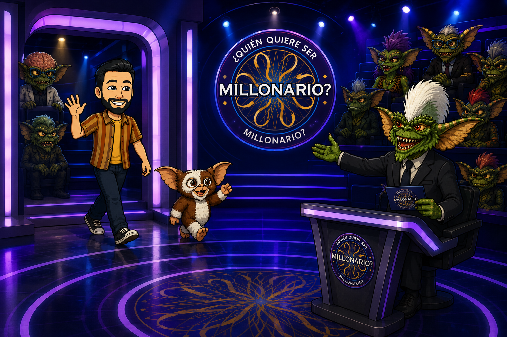
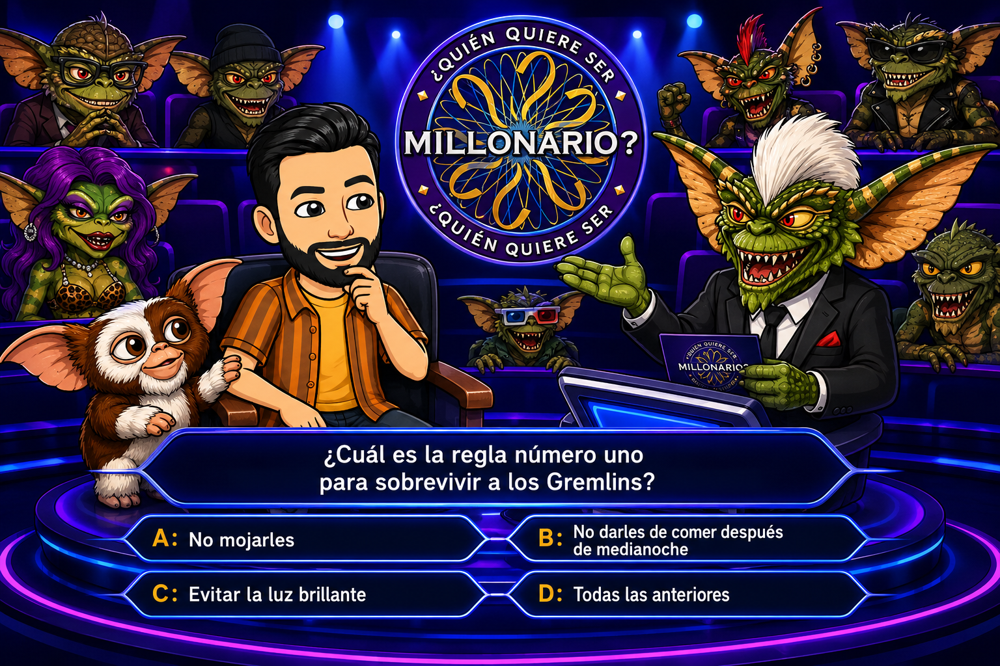

Gremlins Geométricos
¿Quién quiere ser millonario?

¡REGLAS DEL GREMLIN STRIPE!
1. No me expongas a la luz brillante.
2. No me mojes.
3. Y sobre todo... ¡No respondas mal a mis 15 preguntas de geometría o perderás todo!
1. No me expongas a la luz brillante.
2. No me mojes.
3. Y sobre todo... ¡No respondas mal a mis 15 preguntas de geometría o perderás todo!
Responde correctamente a 15 preguntas consecutivas de dificultad creciente. Dispones de dos comodines especiales, pero ¡CUIDADO! Si usas uno en una pregunta, el otro quedará bloqueado para esa misma ronda.
Autor: Joaquín Candañedo.
Jugador:
Pregunta: 1/15
Nivel: Fácil
Tiempo Pregunta: 02:30
Tiempo Total restante: --:--
Puntos: 0

Aquí irá el enunciado de la pregunta geométrica.
Fin de la Partida
| Concursante: | - |
| Preguntas Respondidas Correctamente: | 0 / 15 |
| Tiempo Total Invertido: | - |
| Puntuación Final Extra: | 0 puntos |